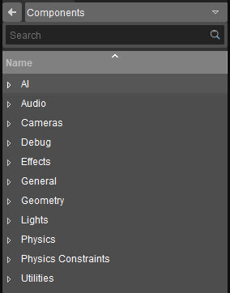

Обзор
Система Entity Component устраняет необходимость в игровом коде CRYENGINE для отображения и управления сущностями внутри сцены. Кроме того, система была разработана, чтобы предоставить разработчикам модульный и интуитивно понятный способ создания игр как на уровне системы, так и на уровне сущности. Эта функция используется для добавления на уровень предопределенных объектов, включающих определенный компонент, например аудиотриггер, точечный источник света, излучатель частиц и т. д.
Используйте Поиск поле для поиска определенного компонента.
Для получения дополнительной информации, пожалуйста, обратитесь к Компоненты сущности страница.
